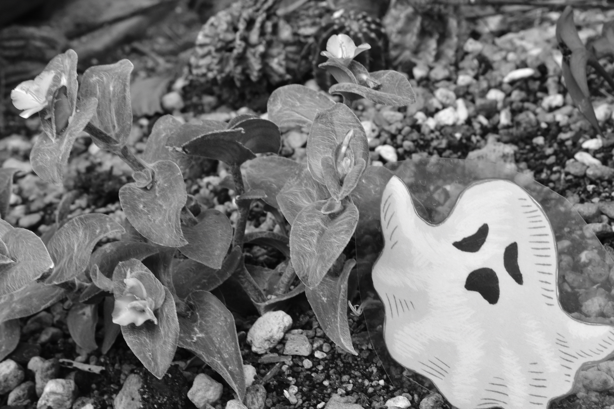

Black and White Photography
モノクロ写真の魅力と撮り方
Cityscape
光源を分割したようなアングルから見える対比で街の美しさとレトロな雰囲気を表現。

Water in pot
神秘的な空間を演出するために店内の照明から反射を活かしている。

Flowers are blooming on the road
真正面からのアングルと影を抑えることでデザインチックな画面へ変化する。

作品

Sun and Sky

White flower

Card title

Wood

Carp

Roadside flower
撮影の際、影と形にこだわりながら構図を決める
露出補正で微調整し明暗で好みのモノクロ具合に設定する
意外性を感じる被写体を写す
Offcanvas
Some text as placeholder. In real life you can have the elements you have chosen. Like, text, images, lists, etc.